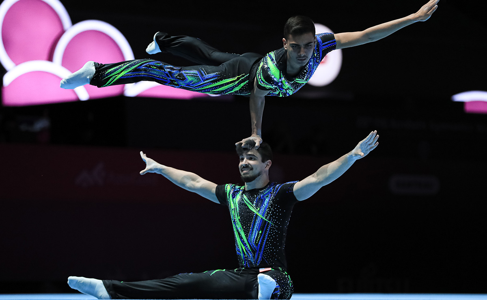
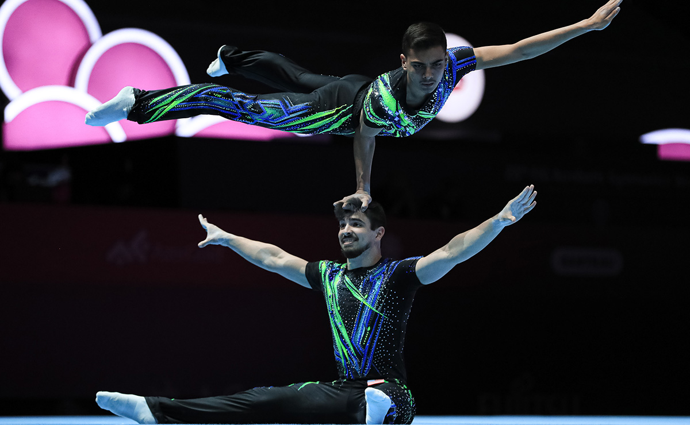

AcroElite
Federazioni

 

La ginnastica acrobatica (anche chiamata “acrosport” o “acrogym”) prende ispirazione e deriva dal mondo circense.
Viene eseguita su una base musicale che prevede la combinazione di movimenti, elementi coreografici ed elementi di acrobatica attraverso un lavoro posturale molto attento e preciso.
Si svolge sulla pedana del corpo libero in formazioni che possono essere:
- coppia (maschile/femminile/mista)
- gruppo femminile (trio)
- gruppo maschile (quartetto)
Queste formazioni sono formate da delle “basi” ovvero le persone che si occupano di sollevare le/i top, che solitamente sono di statura più bassa. In queste formazioni vengono composte delle prese che possono essere statiche o dinamiche.
Da queste prese poi verranno create delle coreografie.
A seconda della categoria in cui si gareggia la coreografia (chiamato anche esercizio) può essere di tipo:
- statico (comprendente solo prese statiche) = concentrandosi sulla tenuta delle prese statiche
- dinamico (comprendente solo prese dinamiche) = concentrandosi su lanci e riprese che mostrano il volo del/la top
- combinato (comprendente prese statiche e dinamiche)